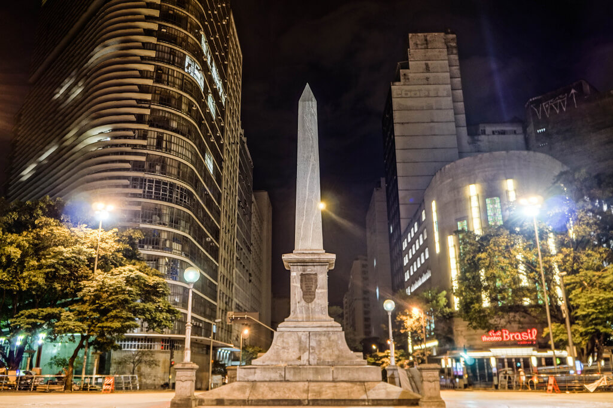

A Prefeitura de Belo Horizonte convocou os adolescentes de 12 anos, completos até 9 de outubro, para receberem a primeira dose da vacina contra a covid-19. A imunização da faixa etária acontece no próximo sábado (9).
Os adolescentes de 13 e 14 anos se vacinam na capital nesta sexta-feira (8). Belo Horizonte imuniza nesta quarta (6) as pessoas de 42 anos com a segunda dose e os idosos de 76 anos com a aplicação de reforço.
Confira o calendário atualizado de vacinação para os próximos dias:
Dia 6, quarta-feira: segunda dose de Pfizer para pessoas de 42 anos. Só poderão tomar a segunda dose no dia 6 as pessoas de 42 anos cuja data do cartão de vacina esteja marcada para até 13 de outubro e dose de reforço para idosos de 76 anos, cuja segunda dose tenha completado 6 meses ou que faltem até 15 dias para completar este prazo;
Dia 7, quinta-feira: dose adicional para pessoas de 70 anos ou mais com alto grau de imunossupressão, cuja segunda dose tenha completado 28 dias, e dose de reforço para idosos de 75 anos, cuja segunda dose tenha completado 6 meses ou que faltem até 15 dias para completar este prazo;
Dia 8, sexta-feira: primeira dose para adolescentes de 13 e 14 anos, completos até 31 de outubro. Para se vacinar, os adolescentes precisam estar acompanhados dos pais ou responsáveis legais;- Dia 8, sexta-feira: primeira dose para adolescentes de 13 e 14 anos, completos até 31 de outubro. Para se vacinar, os adolescentes precisam estar acompanhados dos pais ou responsáveis legais;
Dia 9, sábado: primeira dose para adolescentes de 12 anos, completos até 9 de outubro. Para se vacinar, os adolescentes de 12 anos precisam estar acompanhados dos pais ou responsáveis legais, e aplicação de dose adicional para pessoas de 69 a 50 anos com alto grau de imunossupressão, cuja segunda dose tenha completado 28 dias
Dia 10, domingo: não haverá vacinação
Primeira dose
No momento da vacinação, para a aplicação da primeira dose, as pessoas precisam seguir as seguintes orientações:
Ter 14 e 13 anos completos até 31 de outubro e 12 anos completos até 9 de outubro;
Para se imunizar, os adolescentes de 14 a 12 anos precisam estar acompanhados dos pais ou responsáveis legais;
Ser cidadão residente de Belo Horizonte;
Apresentar documento de identificação com foto;
Não ter recebido vacina contra a Covid-19;
Não ter tido Covid-19 com início de sintomas nos últimos 30 dias.
Segunda dose
Para que os usuários possam tomar a segunda dose é necessário levar o cartão de vacina, documento de identidade e CPF.
Idosos
Os idosos de 77, 76 e 75 anos que tomaram a AstraZeneca ainda não devem comparecer aos locais de vacinação e devem aguardar o intervalo para tomar a dose de reforço.
A aplicação nos idosos acamados a serem vacinados nos próximos dias também será iniciada. Os usuários podem aguardar o contato das equipes da Secretaria Municipal de Saúde para o agendamento do horário ou procurar as unidades para a marcação.
Até o momento já foram convocadas para receber a dose de reforço idosos de 81 a 75 anos e de 88 a 86 anos. A ampliação para outras faixas etárias será feita respeitando o intervalo entre as aplicações e de forma gradativa, condicionada ao recebimento de novas remessas de vacinas.
Para que idosos possam receber a dose de reforço é necessário ser residente de Belo Horizonte, apresentar o comprovante de endereço, cartão de vacinação, ter recebido a segunda dose no prazo de 6 meses ou faltando 15 dias para completar este prazo.
Para mais informações sobre data, faixa etária e local de aplicação acesse:
Chuvas intensas devem atingir BH e mais 468 de Minas até quinta
O Instituto Nacional de Meteorologia (Inmet) emitiu alerta na manhã desta quarta-feira (6) de “perigo potencial” de chuvas intensas em Belo Horizonte e mais 468 municípios de Minas Gerais, o que representa cerca de 55% das cidades do Estado.
As tempestades devem ocorrer até as 11h desta quinta-feira (7), com volume esperado entre 20mm e 30mm por hora, ou 50mm por dia.
Ainda, há “baixo risco” de corte de energia elétrica, queda de galhos de árvores, alagamentos e descargas elétricas durante as chuvas.
Confira as recomendações do Inmet em caso de chuva:
Em caso de rajadas de vento: (não se abrigue debaixo de árvores, pois há leve risco de queda e descargas elétricas e não estacione veículos próximos a torres de transmissão e placas de propaganda).
Evite usar aparelhos eletrônicos ligados à tomada.
Obtenha mais informações junto à Defesa Civil (telefone 199) e ao Corpo de Bombeiros (telefone 193).
Veja a lista de cidades afetadas pelo alerta do Inmet em:
Outra história que ocorreu recentemente, em um bairro da região oeste de BH, é a de um jovem que foi morto aos 18 anos dentro de uma padaria no dia 15 de setembro dste ano.
Câmeras de segurança registraram o crime. As imagens mostram um homem dando chutes e pisões na cabeça da vítima. O rapaz foi hospitalizado, mas não resistiu. Na última terça, moradores da comunidade fizeram um protesto, indignados com a situação.
“Ele tinha o sonho de ser bombeiro, não gostava de confusão, até mesmo aqui em casa, quando os irmãos brigavam ele não admitia. Ele sempre fez o que queria.”, diz a mãe.
A família afirma que o agressor é um policial à paisana. Richard teve a morte cerebral confirmada no último domingo (19). Ele foi enterrado na terça-feira (21), no Cemitério da Paz.
A Polícia Civil diz que um inquérito foi aberto para investigar o caso. A Polícia Militar não emitiu posicionamento até o fechamento da reportagem, mas o espaço continua em aberto.
Tráfico
A família de Richard Santana admite que ele recolhia dinheiro para o tráfico na região. A mãe afirma que o aconselhava a parar com isso.
“Era um dinheiro que eu não usava em casa. Não achava certo. Infelizmente, prometeram matar ele com 18 anos. Ele fez aniversário no dia 8 de setembro e morreu uma semana depois. Sempre aconselhava, dizia que ele não precisava disso. Mas ele dizia que queria uma vida melhor ”, relata a mãe.
Dois dias depois do ataque, a carteira do rapaz foi encontrada em frente o portão da casa da família.
"A carteira com o documento da moto dele e a identidade apareceu na porta da minha casa. Eu acho que colocaram para dizer que ele estava morto. Por dentro eu estou chorando snague. Toda hora eu choro. Até hoje não consegui botar um feijão no fogo. Estou detonada, não consigo, são muitas lembranças", disse.
Doação de órgãos
Após a confirmação da morte de Richard Santana, a família do rapaz decidiu doar os órgãos dele. Ao todo, sete pessoas foram beneficiadas com a ação, sendo que uma menina em São Paulo recebeu o coração do jovem.
“Ele fez a alegria de muitas famílias. Ele precisou morrer para salvar vidas”, pontuou Lucélia Santana.
E você? O que pensa sobre a ação da família, de ajudar mais pessoas, doando os órgãos dele para salvar outras vidas?
Faria o mesmo?
Conheça a história de Belo Horizonte e descubra este lindo destino mineiro

A história de Belo Horizonte começou com o bandeirante João Leite da Silva Ortiz, que atingiu a Serra de Congonhas na intenção de encontrar ouro. Não encontrando ouro, em 1701, estabeleceu-se no lugar que ficou chamado por Arraial do Curral del Rei. Curral del Rei, depois Cidade de Minas (1897), até tornar-se Belo Horizonte (1901), seria a capital mineira marcada pela ideia de modernidade e racionalidade que chegava com a República. E, em mais de um século de história, a cidade é hoje uma das principais cidades do país.
A cidade de Belo Horizonte foi escolhida em 1893, no século XIX, para ser a capital do Estado de Minas Gerais, depois da constatação de que Ouro Preto (antiga capital) não possuía estrutura para expansão urbana. Por essas razões, Belo Horizonte foi totalmente planejada.
Em 1894, foi iniciada a construção de Belo Horizonte, com ênfase moderna nos seus aspectos construtivos. O planejamento urbano ficou a cargo do chefe da Comissão de Construção da Nova Capital Aarão Reis. Foram privilegiados os aspectos construtivos na zona urbana da cidade através do planejamento de espaços, ruas e avenidas que demonstrassem caráter elitista, e que permitissem comportar o crescimento que era esperado para a nova capital de Minas Gerais.
No início, os primeiros anos como capital foram relativamente tranquilos. Porém, o tempo passou, as esferas administrativas se consolidaram e a cidade passou a enfrentar problemas, comuns de qualquer cidade, principalmente das capitais. Problemas ocasionados principalmente pela ausência de estruturas, sejam de lazer, ou amplas, como saúde, educação, transporte público ou pela incapacidade das estruturas existentes atenderem a toda população. Esses efeitos ocorreram principalmente nas décadas de 30 e 40 do século XX.
A década de 40 do século XX foi marcada pelo avanço da industrialização. Nessa época foi inaugurado o Complexo Arquitetônico da Pampulha (composto pela Igreja de São Francisco de Assis, o Iate Tênis Clube, a Casa do Baile e o Cassino, hoje Museu de Arte da Pampulha, circundando a Lagoa da Pampulha), encomendado pelo prefeito em exercício Juscelino Kubitschek, com projeto assinado por Oscar Niemeyer. Em 1950, a população da capital de Minas dobra, passando para 700 mil habitantes, ocasionado pelo êxodo rural no Estado de Minas.
Nos anos 60, a capital passou por um processo acelerado de crescimento urbano que avançou sobre suas ruas, quando foram demolidas casas e áreas verdes e ergueram-se altos prédios, em um processo de descaracterização da “Cidade-Jardim “.
Os anos 70 foram marcados pela verticalização da cidade, que comprometeu boa parte das suas características originais e do seu patrimônio arquitetônico. Nessa época, contava com algo em torno de um milhão de habitantes.
A partir dos anos 80, a desaceleração econômica prevaleceu e os movimentos sociais urbanos organizavam-se para reivindicar direitos urbanos básicos, como transporte público, atendimento médico e acesso à educação. A partir do início da década de 90, Belo Horizonte é marcada por programas e projetos de melhorias urbanas e sociais, com a efetiva participação popular, fazendo Belo Horizonte chegar ao século XXI com quase 2,4 milhões de habitantes distribuídos em seus 331 km².
Veja a seguir um vídeo sobre a história dessa linda cidade
Curiosidades de BH
Curiosidades de BH, nossas queridas lendas urbanas
Loira do Bonfim
O bairro Bonfim é vizinho ao centro de BH. Muito antigamente, era considerado periférico, tanto que o cemitério foi ali construído como é de costume nas tradicionais e antigas cidades católicas do estado mineiro.
Ali próximo, principalmente na rua Guaicurus, surgiram os primeiros prostíbulos, cabarés e bodegas. Os trabalhadores da rede ferroviária, da prefeitura e da construção civil iam para aquelas bandas para se embriagar e curtir os princípios do que se tornaria a capital nacional dos bares.
Nesse clima de libido e embriaguez surgiu a figura da loira. A lenda conta que a bela moça era uma noiva que foi abandonada no altar por seu amado. Não suportando a decepção e vergonha para sua família, já que a sociedade da época era ainda mais tradicional que a atual, a jovem se matou.
Então, os relatos diziam o seguinte: a loira seduzia os boemios do centro da cidade nas madrugadas e os convidava para uma visita em sua casa. Ao desembarcarem no bairro Bonfim, a loira se dirigia ao cemitério e dizia que ali era sua morada.
Ainda hoje, há quem defenda que, vira e mexe, a noiva abandonada ainda prega algumas peças nos vadios e adúlteros do baixo centro de BH. Segundo a lenda, ela seria muito apegada aos bens materiais em vida e, por isso, é obcecada com o cemitério que acabou virando o seu lar.
Capeta da Vilarinho
A razão nos diz que a avenida Vilarinho é assombrada pela dura realidade. Quando chove, tudo alaga e comerciantes perdem produtos e moradores seus pertences. Um verdadeiro pesadelo, né?
Mas, a nossa lenda diz respeito a um outro tipo de sonho ruim. Tudo começou na década de 80 e o palco foi as Quadras do Vilarinho. O lugar sempre foi reservado para festas noturnas com muita dança e agitação. Na época, até concursos de dança em dupla a casa promovia.
Foi nesse cenário que surgiu um homem de chapéu branco, alto, loiro, muito bonito e um exímio dançarino. Claro, as mocinhas ficaram encantadas, o tal sujeito se apresentou como Alex. Uma das garotas, talvez a mais apaixonada, propôs que os dois dançassem juntos no concurso e o bonitão logo aceitou.
Tudo ia muito bem, a vitória era praticamente certa quando algo horrível aconteceu. Alex titubeou e deixou seu elegante chapéu cair revelando um par de chifres proeminentes, era o próprio capeta! A parceira de dança ficou apavorada fazendo com que seu parceiro se mandasse às pressas para o banheiro das Quadras do Vilarinho.
Quando os seguranças e amigos da moça conseguiram arrombar a porta, não havia ninguém dentro do banheiro, apenas fumaça e um estranho cheiro de enxofre! Essas curiosidades de BH são mesmo assustadoras, concorda?
A maldição do Palácio da Liberdade
Esse caso é um dos mais antigos e estranhos dentre as misteriosas curiosidades de BH. Maria Papuda é a protagonista desta desconcertante história. Belo Horizonte crescia muito rapidamente e, sua localização privilegiada, fez com que a capital do estado fosse transferida de Ouro Preto para cá.
A velha senhora morava em um casebre no terreno que a Comissão Construtora da Nova Capital escolheu para construir o palácio que abrigaria nossos governadores estaduais. A Comissão desabrigou a Papuda que, muito a contragosto, se retirou do terreno.
Não sem antes proferir uma terrível maldição que assustaria os mineiros da capital logo nos anos subsequentes. Ela profetizou a morte daqueles que ocupariam o Palácio da Liberdade e aterrorizou os cidadãos mais supersticiosos: Silviano Brandão morreu em 1902 e João Pinheiro em 1908.
Ambos faleceram nas dependências da casa oficial, logo nos primórdios da construção da cidade, contribuindo ainda mais para acender o imaginário popular. Depois disso, os presidentes Raul Soares e Olegário Maciel também faleceram no interior do Palácio da Liberdade.
Puxa, as curiosidade de BH que separamos são realmente bem estranhas, não é verdade? É claro que existem muitas outras lendas e contos interessantes, mas agora, pelo menos, você já conhece as mais interessantes!